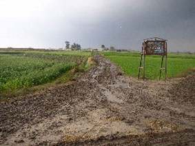
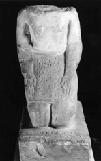
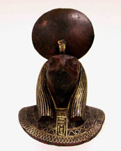
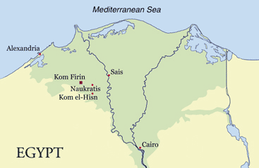
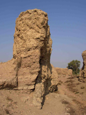

|
The British
Museum has now completed three seasons of fieldwork at Kom Firin
in the Western Delta, directed by Neal Spencer.
Several factors
led to the choice of this site for a new fieldwork project. It presents
an extensive amount of archaeological deposits above the water table,
an important consideration in the Delta, where excavations would
otherwise require a water-pump.
Kom Firin provides the opportunity to investigate a settlement and
its temple(s) in the Western Delta, an area having received little
systematic archaeological exploration, despite its undoubted strategic
importance throughout much of the late second and early first millennium
BC. Furthermore,
like many sites in the region, it is under serious threat from the
encroachment of agriculture. Finally, Kom Firin has a historical
link to the British Museum. Flinders Petrie visited the site in
1886, as part of his fieldwork on behalf of the Egypt Exploration
Fund. He acquired two objects now in the British Museum.
|

The
present-day access track to the site echoes the route of the Delta
Light Railway.
|
|

Limestone
statue of Psamtekseneb, late 26th Dynasty. Purchased by Flinders
Petrie at Kom Firin. Height: 30cm. British Museum EA 16037.
|

Bronze
barque-fitting, inlaid with gold and bearing the cartouche of Amasis.
Purchased by Flinders Petrie at Kom Firin. Height: 14cm. British
Museum EA 16041.
|
| 
Map
of the Nile Delta, indicating the location of Kom Firin.
|

'Pedestal'
created by sebakhin digging, in the south-eastern part of Kom Firin.
Layers of archaeological fill built up against a mud-brick wall
are visible in the exposed section.
|